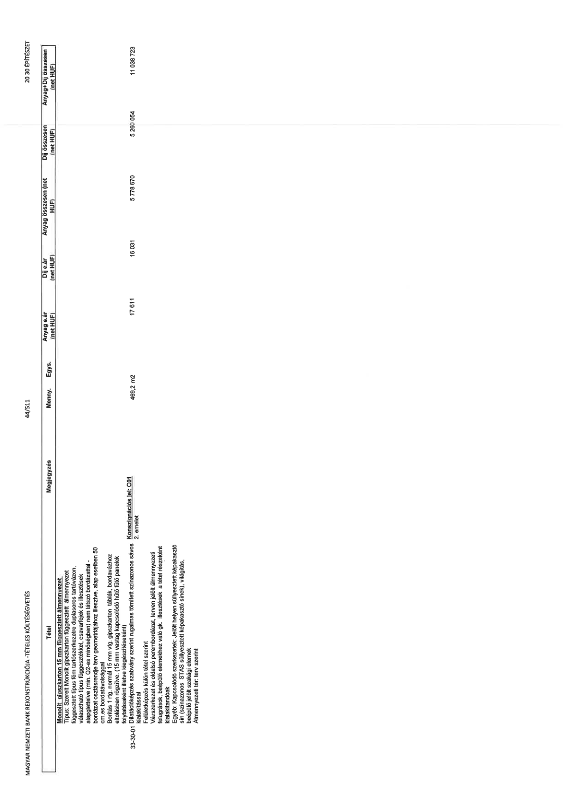

| Tétel | Megjegyzés | Menny. | Egys. | Anyag e.ár (net HUF) | Díj e.ár (net HUF) | Anyag összesen (net HUF) | Díj összesen (net HUF) | Anyag+Díj összesen (net HUF) |
|---|---|---|---|---|---|---|---|---|
| 33-30-01 Monolit gipszkarton 15 mm függesztett álmennyezet Típus: Szerelt Monolit gipszkarton függesztett álmennyezet függesztett típus fém tartószerkezetre duplasoros tartóvázon, vázszerkezet (típus) rögzítőelemekkel, csavarfejek és illesztések alapglettelve (min. Q2-es minőségben) nem látszó bordázattal - bordázat osztásrendje terv geometriájához illesztve, alap esetben 50 cm-es bordatávolsággal Borítás 1 rtg. normál 15 mm vtg. gipszkarton táblák, bordavázhoz eltolásban rögzítve, (15 mm vastag kapcsolódó hűtő fűtő panelek folytatásaként illetve kiegészítéseként) Dilatációképzés szabvány szerint rugalmas tömített színazonos sávos kialakítással | Konszignációs jel: C01 2. emelet | 328,1 | m2 | 17 611 | 16 031 | 5 778 670 | 5 261 054 | 11 039 724 |
